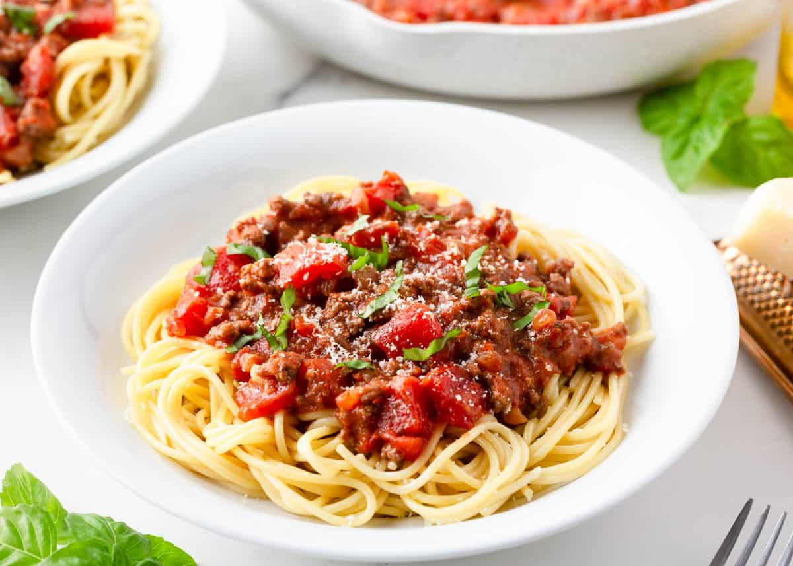

Classic Spaghetti

Description
Classic spaghetti is a timeless and delicious Italian pasta dish that's loved by many.
Ingredients
- 8 ounces spaghetti
- 2 tablespoons olive oil
- 2 cloves garlic, minced
- 1 (28-ounce) can crushed tomatoes
- 1 teaspoon dried basil
- 1 teaspoon dried oregano
- Salt and pepper to taste
- Grated Parmesan cheese for serving
Steps
- Cook spaghetti according to package instructions.
- In a large skillet, heat olive oil and sauté garlic until fragrant.
- Add crushed tomatoes, basil, oregano, salt, and pepper. Simmer for 15-20 minutes.
- Serve sauce over cooked spaghetti, and sprinkle with grated Parmesan cheese.